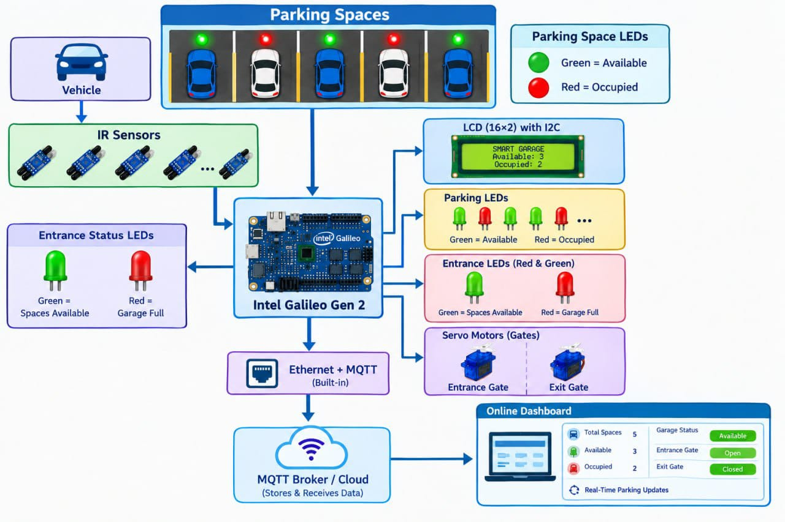

Our Smart Garage System uses embedded technology and IoT concepts to improve parking management. It combines sensors, a microcontroller, servo motors, and visual indicators to automate vehicle entry, exit, and parking space monitoring. The system aims to make parking easier, faster, and more organized.

Parking garages often face problems such as difficulty finding available parking spaces, long waiting times at entrances, and inefficient parking management. The proposed Smart Automated Garage System uses IoT technologies to monitor parking occupancy, automate gate operation, and provide real-time parking information through an online dashboard, improving efficiency and user convenience.
Intel Galileo Gen 2 IR Sensors SG90 Servo Motors (2) 16×2 LCD with I2C Module Parking Space LEDs Entrance Status LEDs (Red & Green) Resistors Breadboard Jumper Wires Ethernet Interface (Built-in) MQTT Protoco